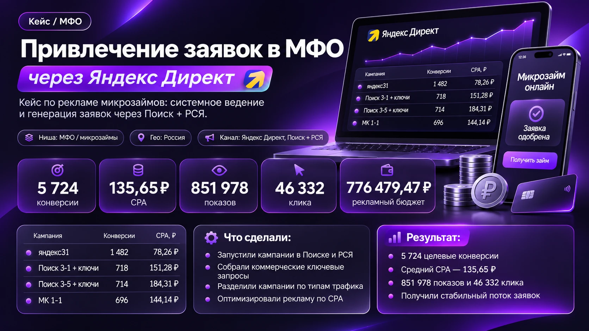
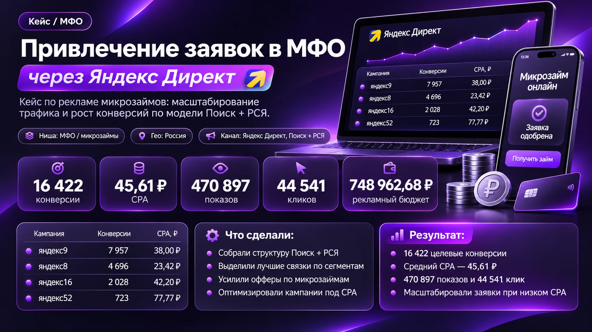

конверсий
пластический хирург
в Москве · Яндекс Директ
Разберитесь, как
работает реклама
и куда уходит бюджет
вашего бизнеса
Переходите в канал в MAX,
чтобы смотреть реальные кейсы
и понимать цифры в отчётах
01Понять, что влияет
на стоимость
обращения
02Познакомиться
с реальными кейсами
из разных ниш
03Разобраться, какие
вопросы задавать
специалисту по рекламе
Перейти в MAXсмотреть кейсы!
!Для собственников бизнеса
и тех, кто отвечает за рекламу



результатов в VK Рекламе
для проекта
«Бундеслайн Авто»
результата в VK Рекламе
в проекте автоимпорта
«Мир Дорог»
конверсий по данным
проекта GORDOV CODE —
приложения для бизнеса
Что вы найдёте в канале?
Разборы рекламы
и понятные
ориентиры
ПрактикаРеальные кейсы:
бюджет, задача
и результат
ЦифрыВопросы, которые
стоит задать
по отчёту
КонтрольВсё в одном
канале
в MAX
Удобно читатьНачните с проектов и цифр. Посмотрите, как я работаю.
Показатели отдельных проектов не гарантируют аналогичный результат. Конверсии и результаты рекламных кабинетов не равны числу продаж или уникальных клиентов.
↗Формат — короткие разборы
◎Площадка — канал в MAX
Перейти в MAXбез заявки!
Читайте в удобное время.
Оставлять телефон не нужно.
Реклама
в цифрах
в цифрах
Бюджет → обращения → решения
Больше ясности в рекламе
Не нужно становиться
директологом, чтобы
понимать главное:
01
На что уходит бюджет
и какие действия учитываются
02
Что получилось в проекте
и чем подтверждены результаты
03
Что проверить дальше
в рекламе и на посадочной странице
Перейти в MAXсмотреть канал!
!Для собственников бизнеса
и тех, кто отвечает за рекламу